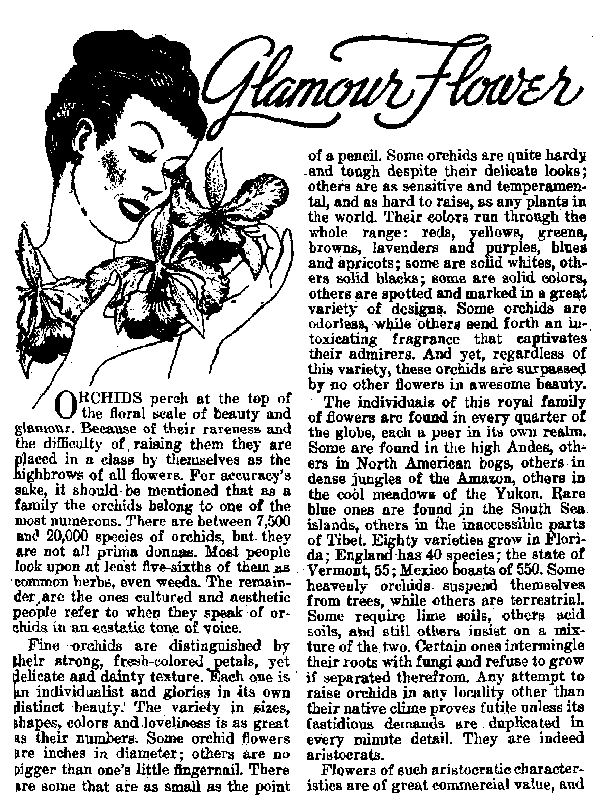

“And There Shall Be Famines”
Foretold *a a Kingdom «ign to thU generation
Progresi toward independence fur the Batt Indie*
Inhuman torture o£ animal* up foe Cong***™™! acttoa.
THB MISSION OF THIS JOURNAL
News BouraM that are able ip keep ypy awalw -fo the vital issues of our time* must be unfettered by censorship and eelfish interests, ’*Awake I” has no fetters. It recognizes facts, faces facts, U free to publish facts. It is not bound by political ambitions or obligations; it is unhampered by advertisers xyhoge toes must not be trodden on; it U unprejudiced by traditional creeds. This journal keeps itself free that It may speak freely to you. But it does not abuse its freedom. It maintains integrity to truth.
“Awoke I” ukj the regular news channels, but U not dependent on them. Its own correspondents are On all continents. In scores of nations. From the four comers of the earth their uncensored, on*the-scenes reports come to you through these columns, This journal’s viewpoint is not narrow, but is international. It is read in many nations, in many languages, by persons of all ages. Through its pages many fields of knowledge pass in review—government, commerce, religion, history, geography, science, social conditions, natural wonders—why, its coverage is as broad as the earth and as high as the heavens.
"Awake 1” pledges itself to righteous principles, to exposing hidden r'ies and subtle dangers, to championing freedom for all, to comforting mourners and strengthening those disheartened by the failures of a delinquent world, reflecting sure hope for the establishment of a righteous New World.
Get acquainted with “Awake!” Keep awake by reading “Awake!”
Published Semimonthly By
Watchtower bibhej anp tract society, ; inc, 117 Adams Street Brooklyn 1, N, Y., tT. 9. A.
N. H. Knoee, President Graft t SuIteh, Secretary
Five cents a copy One dollar a year
RwBlttaicp should be sent tc (fllee In pour country In compliance with reiuliiioni! to fuuantet safe deltTSY of money- BemlliawH eccppted it Bmcklyn from countrls where no offlci ia looted, by inteftiAdoual money order <mlr Sutaadpllnn rilffi In different uunlrte are here staled Id tocsl oinwJJW.
Nolin sf HDlntkn (with ibumuI blank) la joct it kart two femita before subscription expires.
Cbtupe cf aiime when sent to our office mar be oqpcted rffertfre within one month, Send yqur old aa well m naw uddresi.
Offices Yearly Hubscrlpdcn Data
A«nr(ea, U,g„ U7 Adam? St., Brooklyn 1, N, Y. JI AntraHa, 7 Beresford Bd., Slratlifif'M. XsAV. 6s toU*, iQ Trail) Are., tForanto6, Qptarjo 11 EhqIbm. B4 CriTMt Ternce, Londes, W. 3 it South Africa, 023 Beaton Bouse, Cape Town Efl
Enteral bb EBCCDd-clafia matter at Brooklyn, N, Y., Art of March 8, 1879. Printed In U. 8- A.
CONTENTS
The United States of Indonesia
Peoples and History of the Indies
When Will They Outlaw Vivisection J
Ritualistic Murders in Nigeria
Religious Clouds Darken the Emerald Isle 20
Protestants in Religious Bondage A No 23
“Thy Word Ie Truth”
The Anointing with Invisible Force
w it is high time to awake-—Ramans 13:119)
V«hMu xxviri
•rmfy* N.Y, M«v W fttf
NumMr
”And There Shall Be Famines”
DEATH by starvation i« horribl*. At hunger ever deeper into the rictim's vilata hla eyes stare out of eunk-Mj sockets tn nee his own body waste «wny and die. Multiply noth a death anti] mill in ns upon roil lions of corpses hayo hoon piled up, and some tdaa is ot> tain nd of what the world has i offered from food shortages daring tho lost thirty years. The "black horte" of famine baa ran roughshod over the pcoplM and nations, and np to this year 1947 ail efforts to noin it in to a halt have failed.
Bible readers, however, are not surprised, for toward the close of the Bret eentcry A.D. it woe prophesied in The BevelatioTi, the last book of the Bible, that this ‘‘black howe1* repwhent-ipg famine would be looend in tJn-sLe last. days for ita Srim slfllk through ie earth, Christ
J esnE also foretold that f ruOl and after His s<«OQd co ruing Bid the establishment of His king-dean, id ISH4, "nation shall rise againat nation, and If log do ed against kingdom: twi the re ahdl be famines, and pestilences, M4V CT. iU7
and earthquakes, in divers places.’* —Revelation 6; 5, C: Matthew 24:3,7.
Down through the wilories since Christ spoke this purtentonF prophecy there have heen dire sliortuge* at food io various parts of the oartJi. In Europe, India and Chinn millions have died from hanger, but these famines were eimilar to the famines that occur rod before Chriat, such as the famine in Joseph's day, and the famine in Rome in 436 B.C., when starving people by Ilie thousands drowned themselves in the Tiber. Thaw, however,' did not fulfill the prophecy, There is no question that 1914 marked the lime when all nations and kingdoms began to rise op against one another; but did “fam-fnc" follow as fo retold I
During World War I food shortage* made rationing rieeftMary. l was followed by the greute&t famine in the history of the world. In northern China alone, 1MXX) died every day tecatm of fttarvation, as reported by Worlrf's Work {March, 1921, page433). One eye-wilness, Nathaniel
Peffer, writing in the March, 1921, iff sue of Asia, said r have just returned from a journey over the plains of northern China, where land that should be standing man-high in grain is now -a parched desert. Millions of peasants are grazing, like cattle, in the empty wastes for the sparse weed that has survived a year of drought, and probably one human being in three is marked for death.” He told , how the people there had sold their farm animals and implements, their furniture and clothes, and in some instances even their children. Thirty million Chinese, he said, were waiting away from hunger, with five to ten million of them drifting to a certain and horrible death due to the famine.
India at the time was in the same throes of famine. A British organization, the India Famine Fund Committee, “estimates that thirty-two million people are on the verge of starvation.” (The Nation, June 7,1919, page 902) ‘Tlague and. famine are rampant in India. Death stalks through the land, taking its toll. The existing conditions are unparalleled elsewhere in the history of the world” said the report. To this terrible famine in India, which in itself was greater than any famine of past history, add the famine in China, and then in addition to these the great Russian famine that was raging in Europe at the same time. All will then admit that the famine conditions following World War I find no parallel in human history.
Famine tn Russia
consider for a moment the Russian famine:
All rhetoric pales before the grim realities of the famine that is ravaging Ruraia. Competent American observers now admit that the situation, far from being exaggerated, is even more terrible than was at first reported. , . Horrible descriptions of people dying like flies from the eating of offal, grass, wood bfcrk, melon rinds, day and other substitutes for food would seem incredible were they not officially confirmed by the Soviet government reports. Cholera is ragihg there are-no hospital facilities, no medicines, no food relief in sight for weeks, perhaps even months, to come. . . . According to reliable British advices, no fewer than 35,000,000 people are stalked by the grim spectre*of famine and pestilence.—Current History Magazine (published by New York Times}, October, 1921, page 134.
Ih describing how the starving Russians made an indigestible “bread" out of linden leavesiand grass in an effort to numb the pangs of hunger, the Living Age (October 8, 1921, page 75) said, “It does not taste very badly; but after a man eats it for a while he swells up and gets worms in his stomach, and soon after that he dies.”
A year later the Russian famine was even worse, as reported by Dr. Fridtjof Nansen in the Dagbladet, the Manchester Guardian and The Nation. Wrote Dr. Nansen:
Conditions in Russia are getting worse every day. . . . Cannibalism is spreading to a terrific degree. What have you to say, for instance, about this short report from one of our men: *T came to a hut where a widow Ws living who had two children. One of them she had eaten already. The other child was found hanged up in the pantry.Twenty-two million people are now directly endangered by starvation. Some of them in -some miraculous way will escape. Seven to eight million people perhaps might be saved by us next autumn. But the rest of them inevitably face starvation.—The Nation, June 28, 1922, page 786.
The actual famine figures supplied by the secretariat of the Executive Committee of the Communist International showed that of the 135,000,000 Russians 13,772,613 in 16 provinces were actually starving as of February, 1922. Of these, 5,698,000 were children. Nor was this at the peak of the famine. By June of that.
year 247,000,006 gold rubles ($127,452,-QQO) had beep given to relieve the starvation* Of this amount 70 percent was supplied by Russia herself and the balance was contributed by twenty-nine other countries. However, the famin was*so great that only 16 percent of th stricken population was aided thereby*
A year later the continued Russian famine sought to blot out the life of millions mote that had escaped the first two yearg. Said the Commission on Russian Relief: “Our inspection of the famine provinces convinces us that eight million people will starve before the harvest in August, 1923, unless relief feeding is continued and increased. The total may, indeed, be ten millions at the peak of the need in midsummer?’ (Survey, March 1, 1923, page 726) Such famines followed World War I exactly as foretold, and since then food shortages and famine conditions have continued to plague the people of the earth in these “last days”.
Continued Famine*
In 1925 it was said that “the worst Fimine since 1897 now holds the west coast of Ireland in its grip”—Outlook, May 27, 1925*
In 1932, headlines in the New York Times (dateline, May 13) read: “Chinese Starving in Flood Regions; Millions Forced to Eat the Grain They Had Saved to Plant When Waters Receded; Famine-stricken Peasants Sell Wives and Daughters into Slavery for a Few Dollars.” The article that followed said that this Chinese famine was "estimated to be the worst, in the area affected, in more than 100 years".
In 1934 the United States experienced a super-drought. On relief were 3,200,000 faim lies, at a cost of $5,000,000,000 and without which untold numbers would have died. Canada also suffered from severe drought during 1933 and 1934, when 60 percent of her wheat fields were burned up, and the greatest plague of grasshoppers in Canada’s history invaded her western plains. Famine conditions were also severe in Europe at that time, Germany lost her hay crop; France and Italy suffered badly from drought; Portugal’s crops were eaten up by great swanns of locusts; Britain had a most severe water shortage; Rumanian bakers were placed under wartime restrictions. From the Ukraine in 1934 word came that the horrors of starvation were again sweeping over that land. The London Daily Express (August 7,1934) said that whole fields were used “as dumping ground for victims of the famine”. One correspondent in passing through that stricken region counted as many as sixty-six unburied bodies. The Pittsburgh Sun-Telegraph (February 18, 1935) told of the 1934 European famine in a full-page article under the heading “Six Million Russians Starve to Death in 18 Months”
World War II broke out and the woes of famine increased as the Nazi hordes robbed the conquered nations of their food, leaving them to starve. In 1940 the Nazis robbed Poland of 4,000,000 tons of grain, 10,000,000 tons of potatoes and 80 percent of her butter. Denmark, Norway and the Low Countries suffered the same fate as prostrated Poland.
In 1941 Herbert Hoover said:
The consequences of great wars are always famine and pestilence. . . * The World War of twenty-five years ago brought hunger to 300,000,000 people. It was only the intervention of the United States which then saved
*,000 people are already
Today nearly 3Q0;
Europe from starvation and disease, Hunger in the present war is coining faster and with more violence than eveh in the last war. After a year and a half of the present war yearly 100,000,000 more people are short of food than after three years of the last war, . . * on rations,"
As a consequence “victory gardens" were encouraged and the slogan waa raised, “Food Fights for Freedom."
Food, however, did not win the victory in the concentration camps, where hundreds of thousands were starved to death.
A year after the recent war ended the world found itself tighter in the grip of famine than at any time in past history. Millions of Chinese hung on the grave's edge as they ate weeds, rice husks and grass mixed with common clay. “The clay/' they said, “adds bulk to th© weeds and rice husks and makes their meal more heavy." Photographic evidence was produced by Life magazine showing children dying on the sidewalks and in the gutters of China's cities in 1946. According to Life, “if every person in the United States were to stop eating rice for one year, there would still not be enough accumulated to make up China’s. vast deficit"
The following quotation and tabulated figures are from the Look magazine, June 11, 1946:
A fourth of the world is starving today. Tomorrow will even be worse. Famine over most ofr the world now is more terrible than most of us cim imagine. Hungry persons needed 20,000,000 tons of wheat during the year that ends June 30. They have received only 12,000,000 tons. There are now more people* hunting desperately for food than at any other time in history.
Year of Famine Persons Affected
1016 30,000,000
1344 90,000,000
1790 103,000,000
1877 116,000,000
1920 25^000,000
1946 500,000,000
These are impressive figures, especial’ ly the last two, for they show that since 1914 the “black horse” of famine has trodden under foot a far greater number of victims.
The Present Famine
In February of this year Herbert Hoover, whom Newsweek magazine callb “the world's greatest expert on m^ss misery", said: “This is the worse period in Europe in 25 years—and that applies to the British too? (Newsweek, March 3, 1947, page 30) About the same time the New York Times made a survey of the food situation in Europe and showed that conditions continue to be very bad in practically every European country. It is “Europe's worst famine in 50 years, costing the lives of thousands in Romania . . . Bucharest officials estimate that, during February, famine deaths averaged 700 a week, mostly i*n Moldavia". (W.orld Report, April 15,1947) A correspondent writing in the Manchester Guardian, March 20, 1947, said concerning the food situation in eastern Europe: "There can be no doubt that the Russian civilian is having a much harder life today than a year ago, or even during the latter stages of the war.”
In western Europe in the British-occupied zone hungry multitudes in their desperation hSve rioted, stoned and overturned automobiles of the military personnel. Their banners read: "We Are Hungry"; “Don't Let Our Children Starve”; "We Want Bread." Ireland too is battling against famine. “Irish Food Crisis Worst in Memory," read the headline in the New York Times, April 11, 1947. Only one European state, it appears, is not sufferihg from a shortage of food: "Vatican State lives in a restive oasis surrounded by hunger and cold of Italy," (World Report, March 18, 1947)
From the other side of the globe comes the report dated March 18, 1947: “Japan is rapidly approaching a new food crisis, one which promises to be more severe than last year when imports from the U. S. were credited with saving 11,000,000 Japanese from starvation." (World Report)
Let none think these famine condi-
tions will end this summer. Sir John Boyd Orr, the director general of the United Nations’ Food and Agriculture Organization, sees a continuation of the famine, when he says; “Next year, as this year, the great need is for continued efforts to expand production of the most needed foods,” (New York Times, April 12, 1947) Britain’s “biggest crisis since war” is the shortage of food, and it will “hit hardest in six months”, according to April 22,1947, issue of World Report.
Notwithstandin the national and international food councils and control hoards such as the IEFC, WFC, FAO and WFB that are set up to deal with the problem, famine conditions continue. Why? Because droughts, floods, pests and soil erosion, as well as shortages of transportation, farm machinery and manpower are not the real, basic causes of the famine. There are artificial famines created by the “wise men” of the world who set up AAA controls, kill off pigs, plow under corn, and who buy up surplus potatoes, withhold them from the market, and then dump them when they are rotten. This last winter, when 500,000,000 people (one-quarter of the world’s population) were starving, the United States government on January 23, 1947, ordered the dumping of 20,000,000 bushels of potatoes! Another great mountain of 25,000,000 bushels was disposed of as cattle feed, etc. Though such things make the blood of an honest man boil they are not the real, basic reasons for the famine, either.'
Nor are the religious clergy any better than the “great men” of politics and commerce when it comes to finding the basic reason and solving the famine problem. For example, the “Rev.” William E. McManus, writing in Our Sunday Visitor (March 16, 1947), said: “Thousands of youngsters in the war-torn nations are slowly and torturously starving to death. Other thousands ate roaming the streets; wild-eyed scavengers searching in garbage cans for a scrap of bread; little villains stealing food.” The “reverend” sees the famine afl right (500,000,000 feel it), but he faps completely to see the main and essential cause for it, and the only remedy. This is not surprising, however, for these gentlemen of the black cloth and white collar are really the ones responsible for another kind of famine, for the ‘famine in the land, not of bread, but of the hearing of the Word of the Lord’.—See Amos 8:11.
Were it not for this clergy-caused famine everyone would know the reason for the great material famine in the earth, as revealed at Revelation 12 .*12: “Woe to the inhabiters of the earth and of the sea! for the devil is come down unto you, having great wrath, because he knoweth that he hath but a short time.” It is Satan the Devil, therefore, that brings upon the people these woes of famine together with all the other woes mentioned in chapter 24 of Matthew. They constitute the visible “signs” that are present since 1914 that the Devil’s end is near and “the kingdom is at hand”. Consequently all the efforts of the political, commercial and religious giants of the earth to by-pass, postpone or cancel these famines will come to nought. The sign will continue until Armageddon. Therefore, let men of good-will that are not blind as are the leaders of this old world, give heed to this sign and flee to the mountain of protection afforded by God’s kingdom. Poing so, they will escape not only literal famine but also spiritual famine, for “they shall hunger no more, neither thirst any more; neither shall the sun light on them, nor any heat. For the Lamb which is in the midst of the throne shall feed them, and shall lead them unto living fountains of waters: and God shall wipe away all tears from their eyes”.—Revelation Tt 16,17.
AFTER many months of negotiations and conflict between the Netherlands and their former East Indian colonies, the United States of Indonesia have finally come into existence. The story back of this achievement is an interesting one: To gain a proper view of the subject it is well to consider the region and peoples involved.
First knowledge of the fabulous East Indian islands came to Europeans through the annals of Marco Polo, ih the thirteenth century, who visited the island of Java. It is not likely that he was aware of the vast extent of the archipelago of which Java was a part. Today knowledge of the islands is still very meager as far as the majority of people are concerned. The appearance of the East Indies on the map does not convey to the average person their wide extent. It is only when comparisons are made that an idea of their size is gained. When stretched upon a map of the United States of equal scale, for example, it is found that the Netherlands East Indies reach all the way from the Atlantic to the Pacific, and extend over into these oceans a considerable distance. . The actual land area of all the islands taken together is more than a fourth df all the United States, and that does not take in the British portion of Borneo or the half of New Guinea under Australian administration. The main islands of the
Indies are Sumatra, Java, Borneo, Celebes and New Guinea, There are thousands of smaller islands tha.t dot the seas in their vicinity.
Peoples and History of the Indies
The population of the Netherlands East Indies is eight times that of £he Netherlands itself, amounting to nearly 80'000,000, of which number more than half are crowded upon the island of Java. Of the total population only about a quarter of $ million were European or Eurasian before the wer. This figure has been reduced. There were about 1,500,-000 Chinese, and about 70,000 other Asiatics.
The peoples jof Indonesia speak some 250 different languages. There are three main language groups on Java, the Javanese, Sundanese and Madurese (on Madura), each of which speaks a distinct language, but they are able to converse with each othev. by means of low-Malay, a ’ sort of inter-Indonesian tongue. In Sumatra, next in importance to Java, the language is high-Malay in the main, as on the Malayan peninsula, but other languages also, are used. The other islands, peopled by various races, tribes and peoples, account for the remainder of the 250 mentioned tongues.
There is not much record of the history of the East Indies before Europeans came upon the scene. There was a Hindu period, apparently dating back to the first century A.D. In the twelfth century there were four Hindu kingdoms on the island of Java, which became the empire of Majapahti. This kingdom was overthrown by the Mohammedans in the
fifteenth century. When the Portuguese visited Java they found the people^ of Java “the most Civilised-'of the Indies-The JDuteh canoe in 1695 and in 1602 formed b trading company to handle aommerce with the East Indies. It was called Hie Butch East Indies Company. In 1610 a fort was built hear the present city of Batavia, and during the following century the Dutch extended their power greatly. Daring the Napo/ccnw period the Dutch temporarily lost control, but it was rest cured to them in 1316. The Dutch governor* up to 1854 were harsh and extorted from the natives labor and tribute which netted a huge profit for the oppressors, but auo aroused the indignation of the Dutch people, who insisted on reforms. Laws were passed to put the administration of the Indies on a humane basis, but these }a.wt did not became entirely effective until 1872.
Meanwhile the invading, trading Dutch built up many towns, chiefly the coastal ones, improving them greatly, and making some of them look use rep-lieu of neat Dutch ritias, with their cunala and picturesque buildJjjgu, Aside from these modernised section a, however, much of the East Indies remained orinutiva The people' live in bamboo huU, in towns surrounded by bamboo stockades, Streets are of mud and sanitation ia, well, not modern.
JVotartd ReaoavcM
The Dutch had an incentive for bestowing what improvements they did on the East Indian possessions Prewar figure* indicate that Java alone imported $250,-000,000 worth of finished goods, and exported raw materials valued at twice that smn The difference represents a balance greatly to the advantage of the Netherlands, True, the average Netherlander profited only indirectly and to a limited extent from this profitable trade. But the w«oHd middle dags”, as it has been called, knew how valuable these WK ff, i«y
islands and their prod note were to the Netherlands, Indeed, a fifth of the wealth of the Netherlands came from tim Indies ; so they were not too eager to let go of these u green pastures of the Orient". Netherlander^ themselves called the Indies J*the source of the lifeblood of the kingdom''.
The East Indies are rich in many valuable products. Before the1 war they were ifftn in mipGFtance fye
world's oil fields, and a considerable amount of American capital is invested in the oil wells and refineries of Jaya, Sumatra, Borneo, Ceram and New Guinea. The East Indies aho produced, and can again produce, 90 percent of the' world's quinine, 20 percont of its tin, 40 percent of ita rubber, not to mention the rich abundance of coffee, sugar, palm oil, tea, tobacco, spices, cocos, and other vsiuabfe produce. Deaidea puwftte-ing coal in considerable ^nautity. gold and silver also are mined in the islands.
Native Indonesians were not wanting who felt that they might enjoy a far larger share of all this bounty than they were receiving under the supervision of the Ne the Had ds. So, from time to time, agitation for freedom ami independence brektf out, and was promptly suppressed' by the expedient of sending the agitators to one or another of the conveniently isolated smaller islands.’ With the Japanese occupation, however, these struggles for independence found their opportunity, and they were allowed to aet up a native government. The Dutch rulers left the islands in retreat before the victorious Japanese, leaving behind many Europeans who were interned. The Endo-neaians did not particularly love the Japanese, but co-operated In Iwpe that they would ultimately be given their entire independence, in harmony with earnest Japanese assurances. Indeed, when the Japanese were finally defeated they generously gave Jhe Indonesian collaborators the promised liberty!
After the War
The war having cope to an end, the East Indian situation, from the stand’ point of the Colonial powers, called for early attention. The British, representing the Allied powers, moved in. An allied occupation armada dropping anchor at Batavia on September 16, 1945, was prepared to take over the occupied territories from the Japanese, pad to look after interned Europeans. The Indonesian Nationalists were not at all pleased, and were highly suspicious. A few weeks of fighting found them in control of a number of Javads principal cities, such ‘ as Soerabaja and Bandoeng. Allied troops were as yet unequal to the situation. In some cases the still remaining Japanese lost control and turned their arms, including armored cars, over to the Indonesians, rather than to the Allies.
There were grave fears expressed for the interned Europeans and Eurasians, including numerous women and children. Efforts were made to come to terms with ’the Nationalists, There were indications that the uprising might develop into a “holy war” on the part of the greatly preponderant Moslems. Homes of professed Christians were looted, religious pictures were torn from the walls and some of the homes were destroyed. The hatred against the nominal Christians, of whom there were a million, mainly Protestant, had been aroused by the Japanese and their propaganda, which flattered the Moslem majority and did everything in its power to hinder the activity of the “Christians”. A large “Christian" colony near Batavia was razed to the ground, and all its inhabitants were murdered. At Ambarawa Indonesian ‘‘Christians” were imprisoned and tortured. In the interior “Christians” of all nationalities were put in prison.
On October 15 Governor-General Van Starkenburgh Stachouwer resigned, and the lieutenant governor, Dr. Hubertus van Mook, took over, issuing a conciliatory statement to the effect that all remnants of the old Dutch colonial system must go. But, as the Dutch had extensive commercial and industrial interests in the islands, they were not prepared to depart and leave everything behind. The Netherlands government was also unwilling to enter into discussions with the Nationalist leader Soekarno, who had allegedly collaborated with the Japanese.
Finally channels of communication were established, the main link being an Indonesian, Col. Baden Abdul Kadin-Wirdjojoatmodjo, who had occupied important positions in connection with the Netherlands East Indies administration, but still enjoyed the Confidence of the Nationalists. He believed the interests of the Indies for the present could best be served by preserving a degree of cooperation with the Netherlands, while he regarded Soekarno not as an East-Indian Quisling, but as a popular leader.
Meanwhile Indonesian Nationalists battled the British at Soerabaja naval base. Food scarcities, racial prejudices, internment eaifip difficulties and religious differences complicated the situation. It was evident that Soekarno and his government were not too steady. A shake-up took place and Soekarno was relegated to the background while Sutan Sjahrir came to the fore as premier, and was made foreign minister and minister of home affairs as well. He was just about everything. He had, however, not co-operated with the Japanese, and was more acceptable to the Dutch, who were willing to carry on negotiations with him. They came out with a statement favoring the "rapid development of Indonesia as a partner in a kingdom’’ so to be constructed as to guarantee the “self-respect of all member peoples".
Fighting continued. Extremists on one occasion barbarously butchered 24 men whose Mosquito plane had crashed. The men were dismembered and their remains buried in a shallow gra^e. The
place was subsequently visited by British soldiers, and Indonesians were forced to disinter the remains. In repaying evi] for evil the British bombed and burned the town of Bekasi, after evacuating the people. On the uland of Sumatra alau there was fighting, Sumatran leaders stated they were m complete agreement with Premier Sutan Sjahrir Ln demanding complete independence.
In spite of these vicissitudes, some advance was made in negotiations February 10, 1940, the Netherlands government made a definite offer to the Indonesians io a carefully phrased paper, which provided that in doe course the Indonesians should express for them-solvit in a free election what arrange-went they desired. (Soekamo and 8ja-hrir hud uot been elected, though having wide popular suppart) A constitution was aho envisaged which would include “guarantees for fundamental rights, such eu> freedom of worst ip, legal equality without dibcriminatiou as to creed or race, protection of person and of prop-eriyf* and 1rof the rights of minorities, freedom of education and freedom of opinion and expression”. The plan would, moreover, meet all the obligations imposed by the UN Charter upon its members, and would provide membership for Indonesia as a separate state, in due course. While all these discussions < and struggles were going on English troops were displaced by Dutch troops.
In Late June an interesting development look place. Premier Sjahrir was kidnaped, together with several members of his cabinet, and Preridant Sow-karno was back in full power, taking over all the functional of the ineffective government
The Cheriton Affwouni
On November 13, at Cheribon, the Dutch and Indonesians reached an agreement called u last er piece of compromise*, by which Dutch colonialism in the Indies was.dissolved and the Indonesian MAY tt, lw
Republic was to be reeognuea. ±jw Dutch East Indies were to becoma, after due adjustment, the United States of Indonesia, within which there would be two parts, (1) the Indonesian Republic (composed of Sumatra, Java and Madura) and (2) the autonomous states of Borneo and the Great East Hie latter would iudnde the islands of Bali, Celebes, the Moluccas and Leaser SuntUa, and (probably) the Netherlands part of New Guinea- This arrangement would require a constitutional revision by the Netherlands States General (Dutch lawmaking body at the Hague), end that would take time. Hence January,!., 1949, won set as the date for making the alliance effective.
Violence again broke out, however, and the Dutch general, S. H. Spoor, came to Washington to get weapons. Said the general: 'The nohey I wifi fallow is that of the late President Theodore Roosevelt, namely, soft words bodied up by a big stick” In December the provisional state of East Indonesia was proclaimed by the NotlicrUuida government in the name of Queen Wilhelmina. This state consists of Celebes, the Moluccas and other islands cast of Java, and ia the second of three federal republics in the ultimate Union. The third will be the state of Borneo, to be established later.
The Cheribon Agreement, after nineteen months of debate and Conflict, not without bloodshed, became a formal covenant of the Netherlands government on March 25,1947, when Dutch and .Indonesian representatives signed the document in a ceremony nt the governor general’s palace in Batavia, giving recognition to the Indonesian republic and providing for the other states to compose the ultimate Indonesian Union, and linked with the Netherlands on an equal basis.
And in streets decorated with arches of viaee and flowers the city.of Batavia went an a holiday.
AGAIN there is a bill before Congress to limit the practice of vivisection. The present one, H.R. 462, prohibits experiments and operations (except for therapeutic purposes) upon living dogs in the District of Columbia and provides a fine of $100 to $500 or a year of imprisonment for infraction. Behind the proposed measure is much history.
If this bill has the same fate as the many’introduced since the first American measure against vivisection was introduced in 1880 in the New York Legislature, it ia doomed. The repeated failure of such legislation is quite contradictory to America's claim to humane, even loving regard for its animals, especially its dogs, which have been most abused by vivisectors. In a speech against vivisection of dogs, Congressman, Burdick of North Dakota pointed out the failure of all efforts to protect this friend of man up to 1944. Another measure exempting dogs from vivisection, in the District of Columbia, ELB. 491 (1945), failed of passage ,
A bill against vivisection' of live <^ogs introduced in 1945 was passed by the New^ York senate 39 to 9, but killed by the Assembly Rules Committee; while two more bills introduced, by Representative DiCostanzo, of New York city, and backed by petitions; 'bearing 246,500
When Will They Outlaw
names, were killed ffby a decisive margin” in the Seriate Codes Committee, February 12, 1946* The opposition to antivivisection bills was disclosed as the medical lobby, and the New York Times of March 9, 1947, reveals that the formidable foes of this humane legislation will continue to fight for freedom for cruelty.
Since vivisection to obtain medical practice has been for many years illegal in England, for reasons which seemed good and sufficient for the British, it is certainly of public interest to know why it is fostered in this country, which probably supports more pets than any other. But it is not only the pets that when lost or stolen - and turned over to experimenters form one of the most desired victims of vivisectors, but humans themselves, which must ultimately furnish the last or final proving ground for the practicer on beasts, that are vitally concerned. A related question is this: Do you wish to be operated upon by a medico who has tortured io death tens or hundreds ->of helpless animals, who^e vocal cords have been cut (debarked) to prevent all outcry? Is it callous fiends that the medical universities are training to prey upon men? Remember that Professor Starling,, testifying before the Royal Commission (England), declared: “The final experiment must always^be on man.”
Furthermore, abundant evidence frdm doctors proves that torture of animals (forinonly 5 percent of the cases are the victims given any anesthetic because the heartless practitioners lust in the observation of pain) has added but trifling physiological knowledge applicable to
man. For example, of what tue ia the know Eedge of the temperature and time required to baky a dog to death 1 Of how long his onnatde« twitch after decapitation 1 Of the effect of filling its disemboweled abdominal cavity with bailing water? Of eruahing its bcnca and its most sensitive organs, oL etitelling it with wire back-down to a boa rd , sipoa, ing its organa for the observation of the vivteector, often for weeks before its death in agony f
That we may unwittingly haw daily association, may even be treated by men who pitile&aly witness or perform sack atrocities, is the result of the permiBsiou-5 ng of viri section. Some of the greatest offenders arc the universitiea, which train oar younjr men and young women. How often will these sights inflame a ■artistic urge, the perverwon which delights inlilood anti suffering! to find its final satisfaction in the torture murder such aa the infamous Lueb-Leopold eases! How many such youthful sex perverts now stalk the land is witneedea by the hammer killings, the mutilation and dismemberment murders which have been especially prevalent in California-(BlSck Dalilia case of murder and dis-nwmUermen.t, for example) Can Americana any longer ignore laboratories and operating rooms, which caIIoub the mind to- such deedsf Also note the case of Jhrir-t he-Bipper, prominent vivisec tion-Ut, who was led to practice on women.
To these terrible ohambfers of vivi-section horror gu €500,000 dogs per year. Pete arepreferred i AjjS, it maybe truthfully added, are often stolen for the purpose During March of this year the l»os Angeles Examiner ran exposes of "collectors” that roamed the conn try wdehtadiug. dogs and cate, wnzen were later auctioned off and sent by the thousand* to vnrteUB vivisection laboratories, The ''collectors1' are more accurately known as “dognapers” by the members of the fiordid trade, Colliee are a partieniter favorite. On ail Seen it is ''estimated that more them 6,000;000 vivisection al experiments are performed each year in the United Statea”. Americans are led to wonder whether the British knew thaw horrible facte when they cheered a member of Parliament commenting upon our use of goats and mice in the Bikini atom bennb experiment, when he shouted: “W-by -choofte innocent animals when there are so many guilty men available!”
Mar x/r iw
If these statistics are shocking, the further details of operations performed can only be deaeribod u horribly revolting. Vivisection has come to bidude more than “the dissection of, or operation on, a living animal for physiological or pathological investigation1' (Wein ■ ter'*J; its meaning within the scope of the protesting societies includes the use of animals for experiment ally induced disease, for starvation, for pregnancy tests, and the “unspeakable torture of living animals someijmes for uo ouier reason than to demonstrate their sufferings and reactions, and their behavior under pain. * -. In fact,.the actual suffering is too often the sole aim and purpose of the axperimente which aoinelkiiies extend continuously for days and weeks* The fact too that morphia, ether and chloroform are all almost impossible to administer success fully to animals banishes the popular Bopposi-lion that animals in experiment feel little or no pain.
Vivisection therefore in-
IS
chides “cutting operations, the compression of Iparts by ligatures, the administration of poisons, the inoculation of disease, the subjection to special conditions of food, temperatures or respiration, or to - the action of drugs and medicines”, all carried on almost entirely without any form of anesthesia. The literature of vivisectionists proves this. One drug, the South American curare, is sometimes used. Curare renders the animal motionless, but leaves it conscious and sensitive to pain.
In their lust for variety in exploring suffering “there is not an organ of the animals body, not a function, not a sensation, that has not been or is not being investigated and experimented upon by the physiologist”. Bead, if you can endure the horror of it, the enumeration of a few of the favorite practices of the surgical demon: “tying intestines of animals; de-nerving eyes of cats, mustard oil applied; de^pancreatizing animals; rotting dog’s liver with poison; slow death with X-rays; smothering rabbits, taking temperature of brains, manipulating intestines; applying hot flat irons to the shaven bellies of rabbits; starving dogs to a shadow; gall bladder tortures; making cats walk with their brains protruding; torturing pregnant animals; mashing, scraping, and 'puddling* brains of cats; sex gland tortures; making idiots, of goats and sheep by removing thyroid glands; suspending dogs by the ears and removing nerves; producing terrible sores and pasturing ticks on monkeys.” A standard publication, PAys-iology, by V. H. Mottram, professor of physiology in the University of London, describes the operation and actions of a decapitated cat and the “spinal dog” whose spinal cord has been cut in the region of the neck. As for infectious disease experiment the poor animals are the “guinea pigs” of test. ffIs there a new disease discovered by the faculty? It shall be compelled to contact it if possible, or exhibit the reason why it does
not. Is there a^degree of agony that just drops short of death and no more! , . . Nail by nail shall be driven carefully into its limbs till no more crucifixion can be borne "-Dr. Edward Berdoe, Jf.R.C.S.
Does Animal Practice
Limit Human Practice?
The stock defense of the vivisector, which apparently has been sufficient up to now, is that it i^ better to experiment on animals than on humans, A doctor who was criticized for experiment on dogs replied with sinister implication: “I do not have to use dogs for my practice.” In consequence the public has generally dismissed the subject of vivisection with the shrug: “I would rather the doctor would practice on the dog than on my baby?' This is a grave fallacy. The truth must be faced that the vivisector will practice on the dog and your baby, and you too if he is left unchecked! Serums, lumbar punctures or tuberculin injections have been inflicted upon 160 orphans of the St. Vincent Orphan Home of Philadelphia, on 426 newborn babies at Grady Hospital, Emory Div. (Atlanta), and on 500 newborn'babies at the New York Polyclinic Hospital, Department of Neuro-Surgery, Remember the words of Professor Starling: “The final expt?riment must'&lways be on man?
If all this animal experimentation had - been for the purpose of fighting disease in man, the work is retrogressing. In the United States, where vivisection has been practiced ad nauseam, the four leading man-killers, during the period from 1900 to 1939, made the following progress per hundred thousand of population: heart disease, in 1900, 132.1; 1939, 214.1; cancer, 1900, 63.0; 1939, 117.8; cerebral hemorrhage and softening, 1900, 71.5; 1939, 78.1; diabetes, 1900, 9.7; 1939, 25.6. “Animal research medicine used in World War I was proved by U. S. government figure to be more dangerous to American soldiers than the
moat destructive-weapons; . . * killed in action 50,510; killed by disease 62,670?* For this and other reasons eminent doctors world wide have condemned vivisection as useless, misleading For human practice, and often inducing mental diseases in the practices
Said Dr. Wm. Howard Hay (New York); “1 know of nothing that has ever been developed through vivisection that could not much better be proved in other and less cruel ways. We have little right to the name of Christian people until we stop these cruelties.3* Sir4 Charles Bell, professor of surgery, University of■ Edinburgh, pointed out: “The opening of living animals has done more to perpetuate error than to confirm the just views taken from study of anatomy and natural motions?’ “Vivisection is a snare and a delusion" (Dr. Wm. Held, Chicago), “utterly barren of results” (Dr. E. M. Perdue, director, Johnson's Pathological Laboratory in Cancer Research, the largest cancer research laboratory in America), ‘not necessary^ (Dr Erwin Liek, Danzig), ‘not justified' (Alfred Kimball Hills, M.D., editor, Medical Times), and “should not be tolerated” (Forbes Winslow, D.C.Ii, M.R.C.P., London). The absurdity of thinking that phenomena observed while operating upon living animals can be applied for the benefit of humans is patent and has often been exposed. One doctor declares that after operating on the bowels of many dogs he found that his knowledge thus gained was a positive handicap in human operations.
Dr. Arthur V. Allen of Chicago writes: ‘‘Heart-breaking, barbaric sufferings inflicted upon dogs in vivisection laboratories have contributed practically nothing to medicine in 300 years. . . . Disease in animals and disease in are never quite the same. The final test of any procedure (no matter how many times it has been tried in a laboratory on a dog) must be made on the human being?3 Also reiterating the words of MAY r$, W47
Professor Starling, A. Eugene Austin^ M.D., New York, emphasized: “I do not approve of animal vivisection;*! respect myself too much to be a butcher. . ♦ . The final experiment must always be on man.”
Besides these testimonials, anti-vivisection societies have furnished a long list of other doctors, writers and prominent people who oppose vivisection. Since so many proposed measures to stop it have been killed, the question naturally arises: Who are the powerful backers of vivisection? Who are those favoring the immorality of exploiting the helpless? Who nurtures the dangerous dogma that scientific research is exempt from the requirements of mercy and respect for life? The answer is a serious one, and, based upon the evidence of newspapers, and the journals of the offenders themselves, the certainty emerges that American universities, the American Medical Association, the serum manufacturers/ with crassly commercial motives, and a following of “science worshipers”, students, sadists and perverts, make up the proponents of vivisection. (Some think it would be desirable for these to practice on each other. They could get far more conclusive data than possible through experiments on animals.) Evidence of the monetary or perverted motives behind these horrid ranks are not lacking.
Constantly a scries of bills are presented to legislatures to enact compulsory use of serums, and the serum manufacturers employ “diplomats” to lecture in order to persuade people to use serums. The use of vivisection is a component par^ a sales adjunct for serummakers, for tests on animals constitute their sales arguments* The American Medical Association is deeply involved both as a promoter of animal experimentation and advocate of serums.
Within the sacrosanct walls of the respected university, behind it's imposing Gothic and gray front, also works the
IS
vivisecton His room is secluded, but well equipped. Light streams from .great panel windows, overhead are the latest* type auxiliary neons, the instruments are the best procurable for skilled surgery, the dog strapped .to the table a thoroughbred collie. Around the knife-wielder are grouped men with different expressions: two are pale and unhappy, ten appear indifferent; but what is that expression on the faces of those three hear the dog’s harrowed and quivering jaws, soundless but evincing torment endured? Is it possible that their ex^ pression is one of delight1 at this demonstrator’s repeat performance of the *fdeath of a thousand cuts”? Here, in the obscure quarters of the sacrosanct university, elegantly equipped by reason of a large endbwment, is not only a house of horrors, but a hatchery for fiends that will soon find canine torture not enough for their progressively increasing lust to enjoy th Gt pain of others; “the final experiment must always be on man/’ One of the legitimate reasons for medical practice is to ease pain. Is this method, by making the young neophyte either callous to or actually delighting in suffering, proper instruction?
But as serious as lb instructing the student in cruel and inhuman practices, there is a more terrible crime involved: the abuse of man’s God-given dominion over the animals. “Thou [God] madest him [man] to have dominion over the works of thy hands; thou hast put all things under his feet: all sheep and oxen, yea, and the beasts of the field; the fowl of the air, and the fish of the sea, and whatsoever passeth through the paths of the seas.” (Psalm 8:6-8; Genesis 1:26,28) Jehovah's Word brands the rabid vivisectionist as wicked and void of mercy: “A righteous man regardeth the life of his be&t: but the tender
• mercies of the wicked are cruel.” (Proverbs 12:10) In retribution for cruelly torturing animals, the Scriptures denote that Jehovah will employ many animals in the battle df Armageddon, to act against those who have defiled the earth' by such practices as vivisection. Lions and other caged wild beasts may then even the debt against men by tearing their flesh and devouring them horribly* Jehovah will take no' joy in the death of the wicked, but justice must be done. All accounts will be settled at Armageddon. There is no doubt that many of the tormentors of God’s creatures, Guinan and animal, will come to a iviolent end, and with them will end vivisection. - Saith Jehovah: “Every beast of the forest is mine, and the cattle upon a thousand hills, I kirow all the fowls of the mountains : and the wild beasts of the field are mine/’ (Psalm 50:10,11) The God who marks the fall of every sparrow will call the viviseetor to account
T^irudlfstic eJfttaders in Nigeria
Grisly details of the dissection o£ human bodies by moonlight in the juggle swamps of Calabar province of Nigeria fill the secret report brought by government courier from Lagos to London during June of 1946. It relates the outbreak of mass murders by the fanatical Anyotos, who believe them*
selves to be half human and half leopard. From' the still warm and bleeding bodies of their victims the Anyotos have taken the heart and lungs but through the neck, fiurgicai experts acknowledge the difficulty of this feat cm the operating table and with modem surgical’instruments, and they are stumped by the swages’ gruesome accomplishment in the jungle with only the waning moon for light. In every case, the chest and back and neck of the victims are terribly mutilated, the right arm of the males' and the left arm of the females are ripped clean from the body, and the heart and lungs almost always missing1. Over 200 such murders occurred in a few months.
HA.Y ££ If47
17
those that have learned the secret of raising them in captivity have built up a multimillion-dollar business. A single Cattleya orchid sells for $5 to $10, and sprays of Oymbidiums bring $16 to $20 At such prices it ife good to know that orchids are best if cut the day after they bloom and should then be refrigerated for a few hours to toughen them up. If they are refrigerated between wearings it is possible to keep a corsage of orchids fresh for a week.
The raising of orchids is not limited to the commercial growers. There are, in fact, many more amateurs among the 2,500 members of the American Orchid Society than commercial raisers of these blue-bloods. The president of the society started raising orchids as a hobby a few year^ ago and now he has five thousand varieties which he must keep in nine different greenhouses in order to duplicate climates like those occurring in cool highlands and steaming jungles in different parts of the earth. Many of his plants were personally obtained in distant lands during his travels. His latest jaunt has taken him to Brazil.
South American orchids are said to be the “quintessence of all that is strange and beautiful in the world for flowerlovers”, Many of them are epiphytes, that is, they suspend themselves from trees and live on nothing except air, water and sunlight, plus a small amount of decayed vegetable matter. “Celestial orchids” they are called.
Ariafocrafa by Name
Some of the better-known orchids have high-sounding names that are in keeping with their ritzy station in life. When an individual orchid is spoken of, usually the giant bloom of the Cattleya is referred to. It is all-surpassing in loveliness of form and charm of beauty, ranging in color from the deepest purples to the lightest lavenders, with pure whites, scarlets and delicate hues of apricot and strange bronze effects numbered among them. It is well named the “king of the orchid worlds
Opinion as to which is the "queen of orchids” is divided between the Laelia genus and the Odontoglossom orchids. The O. crispum from Colombia has graceful raceihes of large flowers that are blotched with purple, yellow and brown markings that fall on a pure white background.
The second-best-known orchid is the Cypripedium, which name means 'Venus slipper'*, and describes the slipper-shape of its lip. There are several other “slipper” orchids f besides this one named aft^r the mythological Greek goddess; for example, the Phragmipedium cauda-tum which hails from the mountains of Costa Rica, Colombia, Ecuador and Peru. Its yellow-green flowers with red markings have two of its petals extending down like ribbons sometimes thirty inches in length. Another member of the spray type of orchids is the Cymbidium, It is one of the most famous and its flower spikes are three or four feet long.
The Stanhopea tigrina of Guatemala, Colombia and Venezuela is a bizarre orchid in both form and color. Its weird flowers are waxlike and are grotesquely splashed3 with light purple and dark maroon on a background of dull yellow. Adding to the fantasy it breathes forth a strange fragrance that has a definite Latin-American accent. As a contrast with such forward individuals the Mil-tonia vexillaria of Peru is a modest orchid of soft and tender tones of rose.
Orchids of the genus Oncidium are commonly called "butterfly” orchids. The 0. papilio of Venezuela, Brazil and Peru is a rare beauty with spots and bands of clear shades of yellow, orange, brown and green. The “moth” orchids are properly named Phalaen opsis, and come from India and Malaya Peninsula, Delicate flowers they are, tinted with pink and lavender, and particularly demanded on wedding days. Vanda orchids also come
from Malaya, The V. coerulea is bine.
The Arethusa bulbosa.is a native only of Japan; the Coelogyne pandurata of Borneo is a green orchid of the treedweller clan; and so oh and on, the list of these gorgeous flowers could be extended until they numbered in the thousands. And of the thousands of orchids there is only one that has an industrial value: Vanilla fragrans is the source for natural vanilla extract.
Several countries have prohibited the exporting of native orchids because of their rarity and value. Such laws are a result of the wicked practices of certain selfish and greedy collectors.'A case of such may be cited where collectors of a certain European orchid establishment, after obtaining specimens of Cypripe-dium spice rianum from the only hillside where they were known to grow, then destroyed the remainder with fire in order to raise the price.
Those who want to go into a study of orchids in a big way can now go to college and study to be orchidologists. However, this is not necessary for the successful raising of orchids in one’s living room. All one needs is time and patience and a few suggestions. Orchid seeds are as fine as gold dust, and as many as 500,000 are in a single pod. Plant them in a flask on agar-agar that is soaked in a nutrient solution; seal the flask and keep at 66° Fahrenheit for six to nine months; transfer the seedlings to community pots, and after two years put in individual pots; then every two years re, pot, and wait! Wait for five, ten or fifteen years for them to bloom! And. all the time iftirse and care for them as you would for a baby born prematurely. They will have to be kept in a glass case in the window with thermostatically controlled temperature and in which high humidities can be maintained, and they must receive only from 5 to 30 percent of normal light.
The Missouri Botanical Gardens worked out a method of raising orchids in about half the time ordinarily required, by using hydroponics or ‘“soilless culture” in which the plants are grown in. gravel that is saturated with a solution of chemicals used in “flash culture”.
After one has learned the fundamentals in raising these finicky flowers one can start hybridizing orchids, a field that is as broad as infinity. Through artificial pollination a touch of yellow may be added or a deeper lip cut to increase their beauty. But here again one must wait for ten or more years to see the fe-sult of such erogs-pollination. All of these things emphasize the short life of man and his limited resources compared with those of Jehovah God the Creator of this infinite variety and beauty.
c&Teeze It “Dry
< Everybody knows that syrup, and such like, are thickened up by boiling off the water, but how many people know that the water could be ‘boiled off’ by freezing? Such a process, known as “freeze-drying”, was developed during the recent war. It was used for removing the water from such perishables as blood plasma, penicillin and streptomycin, which would have been damaged if they were subjected to high temperatures for removing excess water. The process is really one of sublimation and is carried out in a high vacuum wherein the product is first frozen and then the ice removed by evaporation, passing directly from the solid to the vapor state without first melting. The operation is so rapid, and evaporation so fast, that the product continues to remain frozen. Now that the "War is over (or is it?) it is predicted that this process will find use in dehydrating such foods as meat and fish, and fruit juices.
IRELAND, a land of beauty, A land of softly sloping mountains, running brooks and natural lakes. A green, green land, literally flowing with milk, if not with honey. A fertile little country, well watered, both from the inside and'from the outside. In no single part of her -32,585 square miles is the inhabitant ever more than 60 miles from the sea. She lies to the west of Britain, and she stands alone, I think her loneliness in the midst of the mighty seas is a symbol; for surely nowhere else on earth shall we find a people so very much a part of this old, old world, and yet so very much alone.
In this year of 1947 Ireland is not united. The division within her borders is remarkably strong, both politically and religiously. The southern area, commonly known as Eite, is controlled by one De Valera. This portion consists of some 32 counties, with a population of, roughly, 2,900,000.' The northern part, called Ulster, has only 6 counties, with a population of a little over 1,200,000, and is under British rule. This division came about after nearly 2,000 years of internal strife. Wars upon wars, mostly civil, have drenched her land in human blood and created a hatred between brethren that is sad to see. Her struggles culminated in 1921 in the complete separation of her peoples after the shocking war of 1920, infamous for its rape, torture, wanton destruction of property and wholesale murder. The Ireland we will discuss is the country that has grown out of the Treaty of December, 1921.
Southern Ireland
Dublin, the capital of Eire, is on the surface a fine city, well laid out and boasting of some excellent. colleges. From this capital the South i£ governed by 138 deputies and 68 senators. So fai so good, but all hone st persons who have peeped behind‘the scenes will admit that the real rulership of Eire comes from the priests. With a people 90 percent Roman Catholic, is it any wonder that the dictates of the ^fathers” come before anybody else? Indeed, I doubt if the government would have it otherwise, for the chief industry seems to be the turning out of priests, more priests, and still more priests. The whole 32 counties are dotted with Boman Catholic colleges and homes.
As is always "the case in such countries, the people are kept in bondage to superstition and fear. The religionists play on the low mentality of the poor creatures who receive very little education and even less of the necessities of life in the way of food, clothing and healthful living conditions. There is food to.be had in plenty. Oh yes. But at a price, and the average workingman who earns probably 30 shillings a week^ and
on this must support a family of maybe 8, 10 or 12, as well as pay his regular weekly offering to the church, cannot attempt to buy a quarter of what appears in the shops. In fact, he lives mainly on potatoes and bread, and the result is a diseased body and a very dull brain. The peasant doesn’t complain. He is taught by the priest that it is a good thing to ho poor. The line of argument used is that Christ knew not where to lay His head, so, of course, the nearer one lives to poverty, the closer one can hope to be to Jesus.
However, from war-starved England the tourists come to purchase that which the local Irishman should have; and, on the whole, the tourists are welcome. They are a source of income.to many, as, apart from land work and the production of peat, the means of making a livelihood are scarce. Not all shops welcome the casual visitor, and one fairly well-known practice is worth recording, which is this: Immediately after a sale Jias been made, the customs officers down the line are notified, with a full description of the purchaser and goods purchased. The unfortunate buyer, should he fail to declare hid possessions, in an effort to evade duty, which is heavy, finds himself arrested, searched, fined, and his property confiscated. However, despite tne' strict watch kept, smuggling still goes on. Cattle, particularly, are a source of much worry to the boundary officers. The world-famous race horses are reared in Southern Ireland, and men travel from all parts of the earth to attend the yearly shows. The Irishman is a born gambler. He inherits it from his forefathers of many generations, hut, although he deals so much with animals, very rarely will his horse be his friend. From the richest-landowner to the poorest peasant, sport is a means of easy money, and the easier losing of it.
And as we have already seen, the peasant needs money. He needs it badly; if not for himself, for his church. Just MAY a, 1947
one day in each year is he permitted to give money to a religion not his own, and that is the day the. government sets apart lor the Salvation Anny. One day each year these are permitted to go from house to house collecting, with, the sanction Of the priest. This is the only body of Protestant people tolerated in any way. A few sects, such as ,the Baptists, Presbyterians, and Brethren, do hold meetings, certainly, but they are an apathetic lot. The only true Christians who are doing anything about exposing wickedness and pointing the people to man’s cnly hope, namely, the kingdom of God, are .Jehovah’s witnesses. And what a hated people they are! Catholic and Protestant alike are out for their blood, but still they work on, calmly,persistr ently, amidst milch opposition. They are slowly seeing results.
Only those who have actually lived in Ireland will appreciate what it means for a man to leave the Catholic church and associate with Jehovah’s witnesses. At the first sign that a good son of the church is turning “heretic”, the priest is on the spot. A little bullying is tried at first, but as the man stands firmly for his views more active punishment is put to work. He loses his job, he may lose his house, and it has been known for him to be boycotted to such an extent that no local shop will dare to serve him with food. And, of course; there is always mob violence to contend with. Shrieking,, uncontrolled, unthinking people, ready always to obey the priest, even if it means burning down the house of a neighbor while he and his family lay asleep inside.
Northern Ireland
Is it any small Wonder then that the southerner will, if at all possible, move up io the North, where conditions are better, although far from perfect! And will the Eire government let him go! Why, yes, of course. Just as in the 1800’s Pastor Chiniquy exposed the infiltration of Catholics into America as a political
move, the ultimate object being Boman control of the United States, so today we see the Hierarchy following the old, old dodge. Fill the* North with good, loyal children of the church, is her motto, and in the years to come, when the time is ripe, such children will obey all instructions issued and Ireland (bo she fondly hopes) will become once more a united nation, This subtle method of gaining control is rapidly showing itself, and is much deplored by many thinking men. They see the empty farms, shops and factories being bought up by Catholics, and the key positions in industry, commerce and leadership taken over by Catholics, and they talk, talk, talk about it, but fail to see the only remedy for all troubles, namely, The Theocratic Government, administered by the rightful King, Christ Jesus.
The six counties of Ulster are governed by a legislature, subject to the British Parliament. Although this is so, local ridership differs in many ways from the English rule. Conscription was never introduced here, education has never been brought up to the proper standard, certain products remained unrationed when England was short of the same goods, material assistance for the poor is almost unheard of and several old laws remain that are not good. Ulster is a fertile area, and would be a great loss to England should the Hierarchy's dreams come true, Ulster specializes in dairy farming, supplying Scotland and parts of England with all they can use in the way of dairy produce. Her wet, boggy land also produces much peat, but not on the same large scale as in the South-
She is, perhaps, best known for .her beautiful linen, turned out of the factories after much complicated and clever yrorkmanship. The smell of flax while being prepared for the mills is an odor never to be forgotten. As one draws near the flax-drying fields he thinks of goats, unwashen and very aged, then of pigs, many pigs, and then one ceases to think at all,,but hurries by quickly. The pure Irish linen, famous the world over for its beauty and durability, will sell in the ehdps and markets at a fabulous price, yet a first-class weaver will earn only nine shillings and eightpence for every 100 yards she rolls off the machines, and it will take her three days to weave this amount. From her salary each week will be deducted fines for any imperfections in the work. The boys and girls flock to the mills and factories on leaving school, being little fitted for anything else, unless they possess very wise, far-seeing parents or are of the favored few who receive a good education.
Education for the masses, while greatly improved since 1918, nevertheless has a long way to go before the working-man's child gets a fair deal. Scholarships are few and, even if merited, involve so much expense that, more often than not, advantage cannot be taken of them. In the free schools every pencil and book must be bought for the child by the parents, and where this is impossible due to. shortage of funds in the home the child must sit quietly and attend to what is said, but is unable to join in the exercises and so wastes much valuable time. The result is that many youngsters who are poor play truant, and are haled before the court and whisked away to approved schools. Not much leniency is shown to the erring young. They are usually punished for the first offense.
The northerner, like the southerner, loves his little gamble. The races and football matches are more than meat and drink to him. He doesn't worry unduly if he hasn't sanitation in his home, provided the greyhounds run and the horaea keep fit Living conditions outside the large towns and cities are poor indeed, considering the year in which we live. I know one small hamlet of forty houses without a single toilet among them all.
One thing that will be seen in almost every village and town is an Orange Hall, and, since so much of Ireland hangs around the Orange order, no article would be complete unless some mention were made of this complex trouble that plays such an important part in the life of the Ulsterman. Many years ago sincere, Bible-lovers were forced to flee from Scotland due to persecution, and they settled in the north of Ireland. As time went on religion took control, and today the North is filled with religionists who are against the pope but who believe all he teaches under other names. The feeling between Catholics and Protestants runs high; so high that some folks will wear a large “P” to indicate their views, and the daily papers regularly, in their “situations vacant” column, state the religion to which they wish their future employee to adhere. The Orange order is strictly Protestant, having originated in the year 1690, when King William of Orange defeated the Catholics at the Battle of the Boyne. Tradition has it that the Catholic armies had planned a surprise attack in the middle of the night, but a little robin, inspired of God, awakened King William’s army by tapping on the drummerboy’s drum. Thus, so says the story, God gave the victory to William of Orange.
Year by year, on the 12th of July the faithful members of the Order meet and in ceremonial fashion march on the streets beating a wild and strange tattoo on huge drums. A meeting follows, in which the clergy play a big part, and there is much bleating concerning Protestants’ keeping firm to the faith, and following in the footsteps nf the long-deceased King William. Then everyone goes home and forgets to be a Protestant, for another year. Preparations for this day cover several months. The noise of beating drums goes on night after night as new members receive instruction in the arts and crafts of drum
beating. As can be expected, the marching ceremonies of July 12 see many an odd skirmish, but on the whole the business has developed into a show day, and the Catholics watch quietly and continue scheming. The streets and sidewalks are well decorated by the women folk, and some truly arresting banners appear. I saw one slung high across the main road bearing the following:
“We want no Popish tyrant priest to guide us on our way;
We ileed no heathen string of beads to teach us how to pray.”
The casual visitor feels that these folk - who make such a show of opposing Catholicism must be sincere. Well, are they! The facts speak for themselves. The greatest preacher who ever lived told us we would identify the sincere by their works. The works of the Orange order and the churches that support it are anything but Christian, for they hate the message concerning the reigning Christ, and they bitterly oppose those who go about from house to house preaching the truth about Him. Jehovah’s witnesses, instead of meeting warm friends when carrying forward their missionary, educational work in a Protestant area, meet hardiless,' open hostility, and often violence. And does it deter them in any way? No, not at all! Living as they do in the middle of this strange, seething mass of religious confusion, they press right ahead with the one important work of preaching the gospel, talking to all who will hear, Catholic and Protestant alike.
These Protestant sects, while differing in certain forms and ceremonies, are united in their love of “hell-fire”. And how they love it! They screech eternal damnation, the conscious torment of human souls in a blazing furnace, Sunday after Sunday, weeknight and midday, on the street corners, in the mission halls and in the pulpits. They wave their arms and raise their voices, working themselves into a demonized frenzy in an attempt to
convert the sinners. They condemn Jehovah's witnesses continually, both privately and publicly, so terrified are they that the people might search the Scriptures and see for themselves that the ‘Svages of sin is death”, and not eternal totment -Romans 6:23; Ezekiel 18:4,20.
Jehovah's witnesses in all parts of Ireland, by continually preaching the truth, have turned many to righteousness. Despite the persecution, the numbers of those who do know their God has stead-The days of gathering are far from over. Even as Ltype the drums are at it, in the street b^low my, window. Fodlish, foolish people, to build your house upon the sand! Fearful, so fearful of the puny Roman Church, thinking you can fight and suppress her with your drums and flying banners. You should remember with faith the words of Isaiah (8:13,14):
Sanctify the Lord of hosts himself; and let him be your fear, and let him be your dread. And be shall be for a sanctuary/' ily increased, and more will yet come. ■ —Contributed from Ireland,
Life in Advertising
I GOT on the streetcar at 7:30 a.m.
on my way to work. Along the residential section I counted an average of six outdoor posters tb the block. As the streetcar approached the business section the posters increased to nine to the block, advertising everything from new Fords to church bingo. All together I counted 135 outdoor signs in 20 blocks^
There were 30 car cards up over my head in the streetcar panels. And by this time the business houses had increased to solid blocks. They all dramatized their names and offers. In .each business block I counted an average of 213 business advertisements in the form of overhanging neons, window signs, engraved signatures, shingles, and whatnots. There were many others in ground-floor doorways and upper-story windows.
I could have read the morning's paper on the way in, and on the 24 pages might have digested 139 display ads, plus 3,142 classified ads, '
As I sat down at the desk to begin the day's work I drew out a pencil marked “With the Compliments of Creme-Puff”. I used a blotter bearing ah advertising blurb, I wrote on scratchpads headlined with advertising. I consulted a calendar that displayed hardware. I leafed through a telephone directory containing 12,000 ads in the classified section. A trade journal to which I made reference strutted and strained at every column with 2,134 ads.
At noon I ate lunch in the drugstore which displayed 4,000 labeled items of merchandise. I scanned a pictorial news magazine carrying 271 ads. In the background a radio program made 6 commercial plugs in less than thirty minutes.
When I came back to the office there had been' delivered on my desk 16 advertising bulletins. This reminds me that as I go home tonight I must stop in. at the department store, where.no man has ever taken time to count the thousands of brand names vying for recognition. Then PU go to the Super-Market that carries over 6,000 different food and household items. I'll come out in time to see a sky-writing, a couple of sandwich marchers, avenues humming with trucks bearing painted advertisements, newspaper stalls plastered with show bills. , ', . Without benefit of adding machine I would say that by bedtime I will have had occasion to behold the merits of not less than 30,000 advertisements.
By the way, my job is advertising. —Contributed.
WORD IS
The Anointing with Invisible Force
THE year is 33 of onr common era.
A Jewish feast is on at Jerusalem, the feast of Pentecost. Fifty days previous to that the disciples of Jesus of Nazareth had been startled by the resurrection of Him from the dead: Now, while they were assembled together in an upper room upon this feast day, His promise to them came true: the holy spirit came upon them. It was accompanied by cloven tongues of fire above their heads and the sudden ability to preach God’s message in foreign languages that they had never learned. The -great crowd of foreign-speakipg Jews that was drawn to the spot by the rushing wind and other strange occurrences that took place heard the disciples proclaim God’s message in their respective languages. It was so unusual that many of them were disposed to charge .it all to strong drink.—Acts 2:1-13.
What actually took place was what Jesus had foretold to His disciples, saying: “Wait for the promise of the Father, which you heard from me; that John, indeed, iriimersed in water, but you will be immersed in holy spirit, after a few days.” (Acts 1:4,5, according to The Emphatic Diaglott; Luke 24:49) That was the beginning of the immersion with holy spirit of the members of Christ’s body of footstep followers. It was the authoritative seal that they had been begotten of God, hence ‘Torn again”, “born of water and spirit,” and they were now spiritual children of God, His called and chosen or elect ones. But more than that: it was evidence also that
IWMP 19&
they bad been anointed with the spirit of God and were the anointed onek of God. This event harmonized with God’s dealing with Jesus himself at Jordan river. When He was immersed in water
by John the Baptist, there was u visible manifestation of God's spirit or active force alighting .upon Jesus and God's voice from heaven openly confessed Jesus as His son, saying: “This is my beloved Son, in whom I am well pleased?*
This not only meant that Jesus had been accepted for sacrifice as “the Lamb of God, which taketh away the sin of the world”; it also meant that God had begotten Jesus of the spirit and brought Him forth as a spiritual Son, and that God had anointed Him with. His holy spirit or invisible force. By reason of such anointing Jesus became Christ, which title means “Anointed One”.
Years after the above Pentecost the apostle Peter testified to Jesus’’ anointing. Peter was preaching to the first Gentile or non-Jewish converts, and just before God’s holy spirit was poured out upon these Peter said: “After the baptism which John preached; how God anointed Jesus of Nazareth with the holy- [spirit] ^nd with power: who went about doing good, and healing all that were oppressed of the devil; for God was with him. And we are witnesses of all things which he did . . . Him God, raised up the thii;d day, and shewed him openly; not to all the people, but unto witnesses chosen before of God, even to us, . . . And he commanded us to preach * unto the people, and to testify that it is he which was ordained of God to be the Judge of quick and dead.”-Ae^s 10:37-42.
25
By virtue of Jesus’ being begotten and anointed as the spiritual Son of God He could quote Isaiah 61:1,2 in the Jewish synagogue at Nazareth, and say to His fellow townsmen: “The spirit of the Lord is upon me, because he hath anointed me to preach the gospel to the poor; he hath sent me to heal the brokenhearted, to preach deliverance to the captives, and recovering of sight to the blind, to set at liberty them that are bruised, to preach the acceptable year of the Lord. . . * This day is this scripture fulfilled in your ears/’ (Luke 4:18,19,21) In the case of Jesus His anointing, which commissioned Him to preach, came upon Him immediately when He was begotten of the spirit, after He consecrated himself to do God's will and had been accepted of His Father, which consecration Jesus symbolized by baptism in water, His Father baptized Him with holy spirit, and thereafter Jesus refrained from carpenter work at Nazareth and did the gospel ministry.
Before Christ Jesus there had been anointings, hut these had been by other means, and to other offices. In connection with the sacrificial worship of Jehovah God, Aaron the first high priest of the nation of Israel, and thereafter all his successors in office, were anointed with the holy anointing oil. They were thus commissioned to be the typical high priest of God for that nation. (See Leviticus 8:1-13; Exodus 30:22-33.) -In connection with the kingdom over them for which the Israelites had put in their request with God, the kings of the nation were anointed to the office of king by a servant of God, either a prophet or the nation’s high priest. In the cases of Saul and David, they were anointed in advance by the prophet Samuel. Later on kings were anointed with the unction or anointing oil only when they were installed in the royal office. However, Jesus’ anointing was the first anointing with the holy spirit or invisible force of God, and it was His commission to be a priest higher than Aaron and to be a king greater than David.
Thereafter the anointing of the body of .Jesus’ footstep followers must come not only from God but through Christ Jesus. This was as foretold by John the Baptist, who paid: “He who sent me to immerse in water he said to me, ‘On whom thou shalt see the spirit descending and resting, this is he who immerses in holy spirit/” .(John 1:33, Diaglott) On the day of Pentecost Peter explained to the perplexed onlookers that what they were observing was the baptism of ' the holy spirit of God upon the faithful followers of Christ. Peter’s words were: “But this is that which was spoken by the prophet Joel; And it shall come to pass in the last days, saith God, I will .pour out of my spirit'upon all flesh; and your sons and your daughters shall prophesy, and your young men shall see yisions, and your old men shall dream dreams: and on my servants and on my handmaidens I will pour out in those days of my spirit; and they shall prophesy: and I will shew wonders in heaven above, and signs in the earth beneath; . . . and it shall come to pass, that whosoever shall call on the name of the Lord shall be saved.”
Then Peter preached that the One whom the Lord God Jehovah had made Lord and Christ was the Jesus whom the Jews had hanged on the tree fifty-two days before that. Said Peter: “This Jesus hath God raised up, whereof we all are witnesses. Therefore being by the right hand of God exalted, and having received of the Father the promise of the holy [spirit], he hath shed forth this [spirit], which ye now see and hear.” (Acts 2:14-36) Thus, although it was not directly stated in Joel’s ancient prophecy, the facts developed that Jehovah God pours out His spirit or invisible force upon all consecrated flesh through the Lord Jesus Christ, and this is what Peter there acknowledged and made plain. This fact holds good to this day.
The Red Lands of Luxembourg
IN THE south of the grand duchy of Luxembourg is found its mining basin. The reddish lands of the pits and fields, together with the flowery verdure of the slopes and the pleasing alternation of beech woods and fir groves, form a picture on which the eye delights to rest. To this picture must be added, however, the tall chimneys and the black mass of the steel mills, blast furnaces and rolling mills of a great industrial plant, whose steel output is topped by only six nations in the world.
The people here are wont to say that the prosperity of this region is the economic barometer of the whole country, and to it is credited the reason why the grand duchy is booming today while its bigger neighbors are still licking their war wounds. Since this industrial plant is situated in the southern part or the country, it escaped the devastation caused by the Battle of the Bulge, which raged across the northern half of Luxembourg.
The extraction of the iron ore which we here call ‘‘minette'’ is done in two different ways. Firfet, there are the surface workings, which are the least dangerous. At certain points, the rock which contains the veins of ore projects out of the ground, in which case .the soil covering the rock is cleared away and the vertical face of the rock is then worked laterally by one or more tiers a few meters high.
The method which is used more frequently, however, is that of'subterranean tunneling. The tunnel enters at ground level into the side of the mountain, which usually contains several seams of ore, the red seam, the yellow seam and the gray seam being the most common. Besides these, however, there are, in Luxembourg, black and green seams. Sometimes two different seams are found in the mountain- one above the other. They are worked simultaneously and are connected by an inclined plane.
In these mines there are no deep shafts.
The principal man in the working is the miner, who looks after the boring of the holes and the placing of the explosives in them. These holes are bored by means of compressed-air drills. The hole is filled with explosive powder, and at the opening are attached a cap and a fuse. Some have tried to introduce the use of liquid oxygen as an explosive. When using this method several caps soaked in liquid oxygen are packed into the hole with a fuse attached for lighting. But as this method of blasting is too dangerous for the miners, it has not been possible to get them to use it. When the fuse is lighted the men clear away to find a place of safety, after oryingloudly ‘‘Gare la mine” (“Look out for the explosion”) to warn whoever might be found near by. At the earliest, five minutes after the explosion the men go back to their work, finding great masses of rock on the ground, some blocks half displaced, and wooden supports thrown down. The first work then is to check the solidity of the roof and walls of the room. The displaced blocks are knocked down or adequately supported. The props which were knocked over are set up again.
But even with the greatest care accidents are not always avoidable. Great blocks fall down unexpectedly from the walls or roof of the room, pinning the men down under them. Or a miner mistaking the detonation of another working for that ’of his own goes back before the powder has actually exploded. And in many of these cases the family awaits in vain the father who never comes home again.
A large portion of foreigners, especially Italians, work in these mines, which are the last resource for all those whom life’s harsh hand pushes into the hardest work. Religion and superstition, however, are not kept out by this harsh-
nees of life, but come to the ‘hclp’J of the miners to administer to them their “false comfort” by deceiving these men who daily risk their lives. At the entrance of the tunnels, in a nichq. in the rock, is placed a statue of ' Saint Barbara”, the patron saint of miners, to “protect” them while at their work. On the fourth of December, which has been set aside as St. Barbara’s Day, all the mines close. But many are the miners .who, having learned the truth of the Bible,/know now that it is not a piaster statue that saves life, but that it is the Lord that “preserv-eth all them that love him”.—Psalm 145:20.
So it is in these red lands Luxembourg that the source of iron is hound (the “minette” of Luxembourg contain^ a percentage of 28 to 35). Long lines of mine-cars laden high with this precious earth and drawn by electric engines roll oontmuaJJy toward the bfast furnaces, which are ail more og less in the vicinity of the mines. These lines of cars pass ovex the weighing machines of the plant. Each car bears a little iron plate with the number of the working where it was ioaded, and on it the tonnage is marked. In ^his way the daily output of each working is ascertained. After that the '‘minette” goes on to the blast furnaces, where it is melted down and purified in the fiery heat. The blocks of red-hot iron come out and are sent along between the cylinders of the. rolling-milL Thus the Ted earth is changed into bars of iron.
During the two world wars a perverted world served itself of these riches of the earth to scourge humanity, but the time ia at hand when ail those treasures of the earth will be used to bless man and glorify God in His wondrous New World, —A wake / correspondent in Luxembourg.
Eloquent—but not adequate
That is the testimony of inanimate creation to the majesty of Jehovah. Eloquent in showing forth His marvelous handiwork and-power, but inadequate in stating His purposes toward His intelligent creatures. But the all-wise Creator does show forth His purposes toward man In His written word, the Bible. To learn about how this vital library came into existence read the 384-pagc Bible handbook
This book contains the historical background of the Bible and analyzes and summarizes each book therein. It is available on a 50c contribution.
WATCHTOWER 1H Adami St. Brooklyn 1, N.Y.
Enclosed fiud a {.'oritriturtior; of #>?. Pleaae send me postpaid a copy of
** Equipped for fe'very Good WoTk,r.
City
Zou* No. —______ State__.
Foreign Ministers at Moscow
<$> The report of the secretary of state, Geo, C, Marshall, to President Truman and Congressional leaders on April 27, marked the end of seven weeks of ineffective “treaty-making”. The Moscow Foreign Ministers conference had ended. At Moscpw’s Kremlin Joseph Stalin had given a glittering banquet fop the minIsters and high-ranking members of their delegations to mark the close of the deliberations. It was said that the mood in which ttft conference ended was one of mingled dtsap^intmSto't and hope. But the element of hope was admittedly a very minor ingredient. The Soviet foreign . minister, V. 1 w: Molotov, said, Without humor, “Our work, is pot finished. '* It was, doubtful as > to whether it had even begun. The ministers hid -spent 1,44 hqprS in discus-alon, spread owr 44 meetings. Aja to the Bev0i fhliigfi Jnn which the Wiflsters did ftot. agree during: the seven weeks, they were (1) reparations, (2) unification of the zones of occupation in Germany, (3) a government for Germany, provisional or permanent, (4) Germanes eastern frontier, (5) the future of the Ruhr and the Saar, (6) a pact to keep Germany disarmed, and (7) German assets in Austria to go to Russia.
Palestine Issue to U. N.
<$> Meeting in extraordinary ses
sion at 11 a.m., April 28, to consider the Palestine problem, the
U.N. General Assembly at Flushing Meadnws, New York, was faced with conflicting demands from Arabs, Jews and British, The Arab states demanded an Immediate end of the British mandate and the declaration of Palestinian independence (which would put the Arab majority in control, and leave the Jews in a difficult position). The Jewish Agency (not represented at the Assembly) asserted that British “lawlessness” was responsible for the disorders in Palestine. The Assembly took no action the first day beyond getting organized and electing Dr,*Aranh&, of Brazil, president. Britain stated that while they had submitted the problem to the U.N, they could not agree to abide Uy its conclusions, for they might not be able to carry out its provisions. They agreed, however, to the study of the entire problem of the refugee Jews as well as that of Palestine itself. The demand of the Arabs for an immediate consideration of Palestine in de-, penderice was set aside In favor of the British and American plan -that a committee of inquiry be established to report to the next session of the Assembly. .
Palestine Violence a
Continued Story
The hanging of four convicted Jewish terrorists in Palestine in mid-April was accompanied by the alerting of all of Great Britain’s forces there, on guard against reprisals, threatened by the underground. April IS the Jewish underground opened its oftaJslve, killed a British soldier, and wounded two policemen* An armored police car was blown up on Allenby road. April 22 two terrorists who were awaiting execution in the central Jerusalem prison suicided by means of explosives held to their breasts. The same day terrorists bombed a military and civilian passenger train near Rehovoth and killed eight persons, ipcludlng a three-year-old boy. Three days later; five Britons were killed in an explosion at Tel Aviv. The next day a Haifa police chief was killed lh cold., blood and the Irgun ZvaJ Leumi gang, by means of their secret radio, said, that these ter-rorlstlc acts won)d continue until the British got out and handed the government over to the Jews. There seemed to be no reason why anyone should doubt that assurance of continued , violence,
■
China in the ERO .
April 23 China announced her intention to become a member of the International Refugee Organ. iatftton, and -raised hopes that, the IRO would begin its work by June 30* at which time the t UNERA ceases to operate. China’s quota of 2J percent of, the IRQ's budget Is1 the seventh ' largest. The proportion of the United States’ contribution to the budget is 45.75 percent.
China’s Government Revised
<$> Representatives of the Kuo-mlntang (National Government party), the Young China party, the Social Democratic party and the Non-partisans, gathered at the home of President Chiang Kai-shek on'April 10 for a dinner, and for some government business. They initiated a’ policy statement committing the reorganized government to coutlnnad war against the Communists* One sentence of the statement reads: “If only the Communists have the wllliumMB to muse peace ana Ac railway system is completely restored, the government Trill seek national peace anti unity through political means?' The gathering a greed upon General Ch^ng Chun as premier of the mw government. The Kuomintang has 17 members in the new policy-making state council; the young China party, the Social Democratic party and the Nonpar tieans have four each. z
V. 8. Ships to China
4b A transfer of a substantial number of ships and floating dry-docks was made from the United States to China on April 20. The franafar will be without com-peneatlon, but China will have to Mpalr and equip the vessels, which are to be accompanied by a limited number of naval personnel for their operation.
Japanese Elections
4> Referring to the Japanese general elections (for members of their Congress or Diet), General Douglas MacArthur, April 27, said It was a definite repudiation of Communism and an over' whelming choice by the Japanese people of a moderate course. The Communists had forty-two candidates for the Upper House, but elected none. In the Lower House they obtained four seats, out of 400, representing a popular vote Of 870,000 out of 25,800,000. The Socialists are the largest single pafty in the Lower Hou®?. The elections, held April 20 apd 25, were a preliminary to the promulgation on May 3 of the new constitution, mainly American in origin.
“Untouchability” Ends in India 4 The “Untouchables’* of India were the downtrodden and despised class, forbidden to have contact with the supposedly poblercaste Hindus. Even the shadows of the Untouchables were considered a contamination, w they mast get well out of the way if a caste Hindu happened to pass. In some parts of India the Untouchables might not draw water I rum lmb puirav weiisf uj-send their children to the schools, They provided the sweepers, tai> ners and common laborers, and were all regarded1 as unclean, April 29, however, India's Constituent Assembly passed a provision that ‘'Untouchability in any form la abolished and the imposition of any disability on that account shall be an offense”. British law in India has permitted no civil discrimination against Untouchables, but has not always been enforced. The adoption of a provision on this matter by the native Constituent Assembly is a new thing.
Helgoland Razed
<$> A mighty bleat on April 18 razed the famed German base at'. Helgoland in the North sea. Through two world wars the base had been a formidable obstacle to the British, a Gibraltar and U-boat base for the Germans. Aside from the atomic blasts of the Mst few years, the explosion on Helgoland was the greatest ever touched, off by man. In two njlnutes 3,500 tons of high explosives blasted the fortifications and part of the island, itself high Into the air. Observer ships kept at the safe distance of nine miles. A cloud of red sandstone dust shot upward S,000 feet, hut the explosion did not approach the proportions of the Bikini atomic blast, estimated as eight times as powerful. While part of the Island remains, its value as a base la destroyed—for a whilef at least.
Royalty Tour in Africa
<$> The 72-day tour of the British royal family in South Africa came to an end the latter part of April, after celebrating the coming of age of Princess Elizabeth, heir presumptive to the British throne. The South African people gave her an ovation and a number of gifts, set with a total of 400 diamonds. The king, on departure, received diamonds, too ; the queen, a golden tea service; Princess Margaret, a bracelet. The royal visit was considered a success.
wavumkw* s IJUU5
♦>< King Christian X of Denmark, gts feet seven inches tall, whose kingdom was occupied by the Nazis during the war, died at the pge of 73 fn fate April. He had ruled 35 years, and is succeeded by Frederic XI, who is only an Inch shorter thaq was hls father.
Greek Guerrillas Defeated
Whllp some 1,500 escaped out Of the estimated 2,500 guerrillas that were resisting government forces in the Pindus mountains, more than GOO were killed or captured, and organized resistance terminated. ,The government ia establishing military and gendarmerie posts fn the villages to keep the guerrillas in check.
Aafiistlng Greece and Turkey
<$) The Senate, on April 22, bj a vote of 67-23, paused the aid tc Greece "find Turkey bill, and in effect endorsed the anti-totalitarian Truman Doctrine in so dtk Ing. The same hill had been approved by the House Foreign AI-fair® Committee on April 16. Az> ttoirby the House of Rep resenta-tives ns a whole was deferred.
Price Cuts in E, S,
<$) Following President Truman's qall for a voluntary reduction in prices on the part of business, other voices were heard. Some stated that the president had blamed business and overlooked high farm prices. The president countered with the observation that farm prices soared because of the great demand for food the world over. He did not appear to recognize that the same argument would go for industrial products. Alfred M. Landon observed that high prices were m&re dangerous to the free private enterprise of the U.S. than the Communist party. Actual government interference in the price situation seemed unlikely, however. The seCfatary of the treasury stated that a general reduction in prices in response to the presidential plea would result in lowering the national income as much
as $8,000,000,000. The food industry called for self-regulation to forestall possible government curbs. The ’“Newburyport Plan” of warring against inflation by cutting retail prices ten percent received wide publicity. Other concerns making varying cuts were also acclaimed, but no general price break was In evidence at the end of April.
Union Restrictions Looming
<$> The U. S. House of Representatives, April 17, voted a b'ill to sharply restrict labor unions. The bill, adopted by a vote of 308 to 107: (1) Repeals much of the Wagner Act; replaces the National Labor Relations Board with a “1 a b o r-m a n a g e ment board”; discontinues Department of Labor’s conciliation functions, substituting a new and independent system. (2) Prohibits the closed shop, permitting a union shop only where employers have no objections and where a majority of the workers vote for it.
(3) Eliminates industry-wide bargaining, except where employers concerned have each less than a hundred workers in plants no more than fifty miles apart. (4)' Authorizes government injunctions for a minimum of 76 days against strikes deemed to imperil or •‘threaten to imperil” the public health, safety or Interest. (5) Permits private employers to use the injunction-against unions and sue them for triple damages for “unlawful concerted activities”, such as sitdown strikes, sympathy strikes’ or jurisdictional strikes. (6) Makes Unions liable to the penalties of the anti-trust laws. (7) Requires a period of waiting of at least 30 days before a strike, and an employee-ballot on the calling of the strike. (8) Defines a series of unfair labor practices by unions and workers. (9) Provides that membership in the Communist party, or following the party line, shall be ground for summary expulsion from a union.
In the Senate a similar bill, but less drastic, was being considered the latter part of April.
In Detroit 250,000 United Automobile Workers turned out to a rally protesting against the pending labor legislation.
<$> Late April witnessed a number of victories for striking workers In various United States industries. The General Electric Company, the Chrysler Corporation and the Jones and Laughlin Steel Corporation reached agreements (April 26) increasing employees* wages an average of 15 cents an hour. The CIO gained 15-cents-an-hour wage increases in two-year contracts signed with three large steel companies. The 24-day telephone strike continued, although the policy committee of .the National Federation of Telephone Workers had cut In half Its $12-a-week wage increase demand. An effort to settle the New York city segment of the strike separately proved to be abortive and complicated the situation. National telephone strike leaders, however, held out for a $6-a-week increase.
<$> An official Inquiry into the holocaust at Texas City indicated the possibility that the devastating explosions and fires were started by a carelessly-tossed lighted cigarette. Men working on the deck of the nitrate-laden ship Grandcamp were seen to be smoking shortly before the initial explosion occurred. However, one must have his smoke, even If the result is 877 or more deaths, hundreds of injured, and millions of . dollars in property loss. It is observable that often the disposition to smoke, as in excessive drinking, is accompanied by an obtuseness as to the rights and safety of others.
"Good Neighbors”
Repaying an earlier visit on the part of President Truman to Mexieo, President' Aleman of that country visited the United States in late April, arriving on President Truman’s “Sacred Cow" airplane. He was greeted by the president apd later by enlarged likenesses of himself on all sides. Nice things were Mid in American and Spanish. President Truman: “We have, as a group of free nations, the moral strength, and moreover have the proved good-will of our several countries, to find equitable and peaceful solutions to deficiencies." President Aleman: “In a world where skepticism and discord still becloud peace, our confidence, the confidence qf all the Americans, in the fitness of democracy, Is one of the most valuable assets which we have inherited in our hemisphere.”
$> Projected on a small theatersize screen, television pictures in color were shown at Philadelphia, April 30. An all-electronic system was used in this exhibition, transmitted from Koda-chrome slides. The show" was put on by the Radio Corporation of America with scientists and newspapermen as the “first-nighters”. The pictures were clear and strong, but lacked the more delicate color tints of nature. It was the latest thing in simultaneous color transmission invented by radio and television specialists of the RCA laboratories at Princeton, N. J. It was hoped that the Invention would be available for extended USe in about two years.
Synthetic Gasoline
<$> It is predicted by Dr. R. 8-Aries, research associate In the Polytechnic Institute, of Brooklyn, that within ten years a fifth of all gasoline used will bo synthetic, produced from the cheaper natural gases of which there are estimated to be some 16,000,000,000,000 cubic feet available. There are three plants now being built for the producing of synthetic gasoline and alcohol. The by-products of the natural-gas processes are expected to make more ethyl alcohol than was consumed in the form of intoxicating liquors during 1946. Other chemicals are also produced in the process.
UNITES THE WORLD
Not by political diplomacy, commercial agreements or religious movements will the nations be directed to unity. It is the extending forth of the truth from God's Word and the facts of the day that draws persons from the four corners of the earth to march toward the common ground of thought and action. And it is the exposing of those divisivp agencies at work that cleats the way for this march. Such vital information is contained in each of the seven booklets listed below. Pub-Jished during the last eight years, these booklets outline with fact and Scripture the conditions causing present world disunity and show the way to peace. They are as follows:
WATCHTOWER
Theocracy Religion Reaps the 'Whirlwind Conspiracy Against Democracy Fascism or Freedom One World, One Government "The Kingdom of God Is Nigh” The "Commander tg the Peoples”
These seven 64- and 32-page booklets are available on a 25c contribution. Order naw.
Brooklyn 1, N. T.
11? Adams St
Enclosed find 25c Please send to me the seven booklets, TAeocrucy, Religion Reaps the WftirJtbSnd, Conspiracy Against Democracy, Fascism or Freedom, “The Kingdom of God Is Nigh”, The "Commander to the Peoples” and One World, One Government.
Name .......—...............................-— ----.— ------------..... Street
City
, Zone No/____State
32
AWAKE!